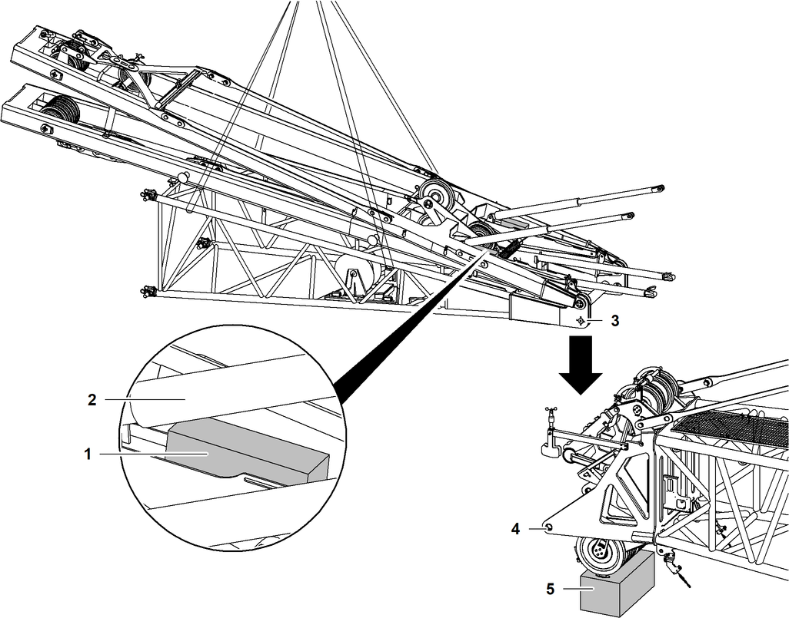
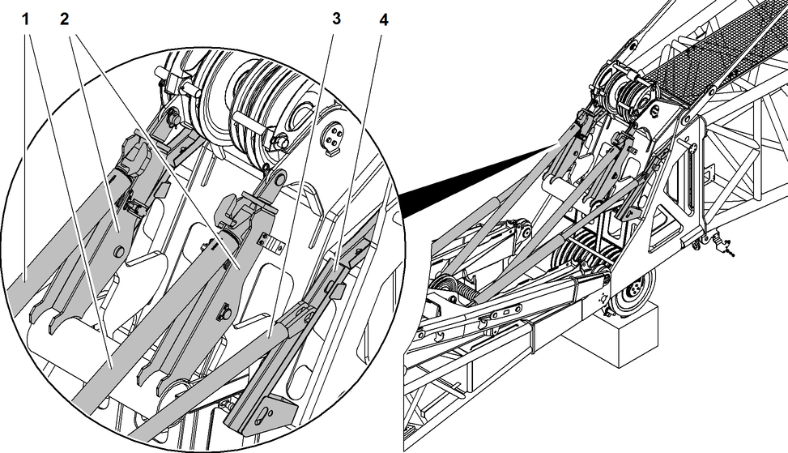

Nadelausleger-Anlenkstück anbauen

Fig. 5514: Kanthölzer unterlegen und Nadelausleger-Anlenkstück zum Hauptausleger-Kopf heben

Hinweis
Liebherr empfiehlt: | |
Anbau des Nadelausleger-Anlenkstücks erleichtern: Standfüße des Hauptausleger-Kopfes mit Kantholz 5 unterlegen. | |
Hydraulische Rückfallstützen 2 des verstellbaren Nadelauslegers mit Kanthölzern 1 unterlegen. |
Nadelausleger-Anlenkstück anschlagen. |
Nadelausleger-Anlenkstück von oben an Hauptausleger-Kopf heben. |
Starre und hydraulische Rückfallstützen liegen in den Führungsschienen am Hauptausleger-Kopf. |

Fig. 5515: Starre und hydraulische Rückfallstützen liegen in den Führungsschienen am Hauptausleger-Kopf
Fig. 5515: Starre und hydraulische Rückfallstützen liegen in den Führungsschienen am Hauptausleger-Kopf
Starre Rückfallstütze (2x) | |
Führungsschiene (2x) an Hauptausleger-Kopf für starre Rückfallstützen | |
Hydraulische Rückfallstütze (2x) | |
Führungsschiene (2x) an Hauptausleger-Kopf für hydraulische Rückfallstützen |
Nadelausleger-Anlenkstück weiter absenken, bis Verbolzungspunkte von Nadelausleger-Anlenkstück und Hauptausleger-Kopf übereinstimmen. |
Bolzen 5 einfetten. |
Wenn die Verbolzungspunkte 6 von Nadelausleger-Anlenkstück und Hauptausleger-Kopf übereinstimmen: | |
Bolzen 5 von außen nach innen einschlagen. | |

Sicherungselement 3 über Bolzen 5 schieben und in Nut 4 einsetzen. |
Nadelauslegertyp | Drehmoment | Schraubenbehandlung |
|---|---|---|
2316 |
239 Nm 176 ft-lb | leicht geöltes Gewinde |
1916 |
239 Nm 176 ft-lb | leicht geöltes Gewinde |
1713 |
291 Nm 215 ft-lb | fettfreies Gewinde und mit LOCTITE 243 behandeln |
1309 |
291 Nm 215 ft-lb | fettfreies Gewinde und mit LOCTITE 243 behandeln |
1008 |
291 Nm 215 ft-lb | fettfreies Gewinde und mit LOCTITE 243 behandeln |
Drehmoment Schrauben verstellbarer Nadelausleger
Schrauben 1 und Scheiben 2 mit angegebenem Drehmoment festziehen. |
Verbolzungsvorgang auf gegenüberliegender Seite wiederholen. |